Using the Provided Quality Control Functions
This document presents several examples of using the provided QC functions. These examples should provide you with a good overview of the offered functionality and potential limitations.
Suggested Workflow
This library is not suited for running the provided QC methods on complete WSIs. Instead, the functions are expected to be run on smaller WSI regions and regular PNG/JPG images. This should provide reasonable options for debugging potential problems, while avoiding the technical overhead needed for processing the complete WSIs.
For processing complete WSIs, we suggest considering the RationAI QC Service, which uses the provided QC functions and is optimized for processing complete WSIs. Be sure to check the service's documentation for more information on how to use it. (Please note that the link to the documentation may change in the future. Please let us know if you encounter any issues with accessing the documentation.)
Examples
The following examples should provide you with the necessary information for running the provided QC functions.
Detecting Residual Artifacts
In this example, we will work with the following image:
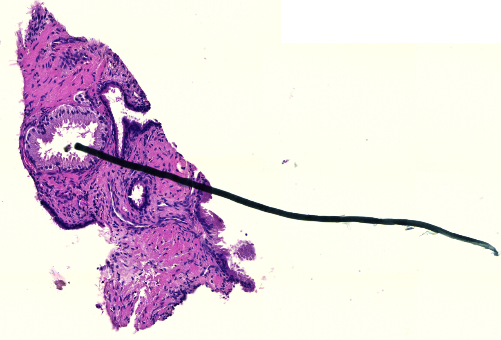
Sample Code
First, we need to import the necessary functionality and load the image into numpy array:
1 2 3 4 5 6 7 8 9 10 11 12 13 | |
Next, we will need to prepare the arguments for the residual_artifacts_and_coverage function and call it on the input image:
15 16 17 18 19 20 21 22 23 24 25 26 27 28 | |
Since the tissue is stained with the H&E protocol, we used the RGB2HER color conversion, which separates
the image into the hematoxylin, eosin, and residual channels. Artifacts are detected by thresholding
the negative parts of all three channels and the positive part of the third (residual) channel.
The used thresholds are the suggested values for the RGB2HER conversion provided by the StandardResidualThresholds class.
The nucleus area is manually approximated from the input image (nuclei are roughly 6 pixels wide), and all detections smaller than a single nucleus are removed.
Finally, in H&E stained tissue, clusters of tightly packed nuclei can produce negative values in the eosin channel
and be incorrectly marked as artifacts. To prevent this, we set the suppression_channel parameter to the negative part
of the eosin channel ("c2_negative"). In this channel, only the detections that survive erosion with a disk
of radius erosion_radius are kept. Therefore, small clusters of nuclei are removed, while larger artifacts are preserved.
After obtaining the results, we can save the binary artifact mask and print the number of examined and flagged pixels:
30 31 32 33 34 | |
The computed mask is returned as a binary image. Therefore, the computed values need to be scaled into the [0, 255] range before visualization.
If the suggested thresholds do not fit your data, the visualize_thresholds function can help with tuning them.
It returns four images (one for each thresholded channel), in which only the pixels exceeding the corresponding threshold
keep their original color:
36 37 38 39 40 41 | |
Results
In our example, 18327 out of the 233744 examined pixels were labeled as artifacts, meaning that almost 8% of the image's foreground area is covered by artifacts. Finally, the computed artifact mask looks like this:
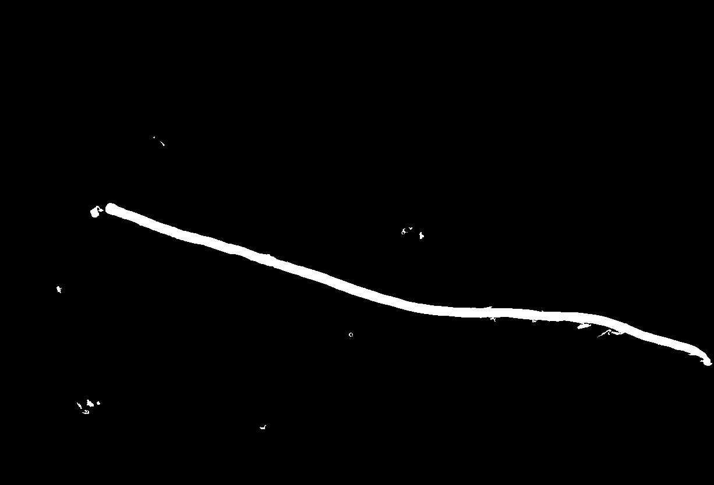
Detecting Blurry Areas
In this example, we will work with the following images:
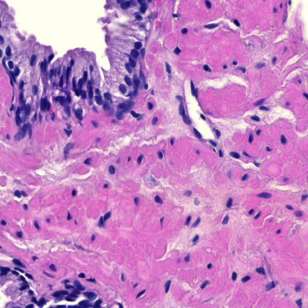 |
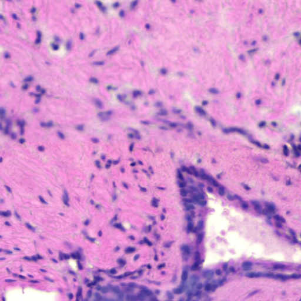 |
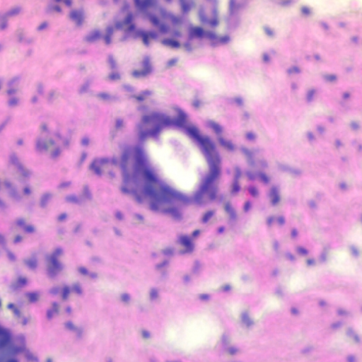 |
|---|---|---|
| Focused Image | Partially Blurred Image | Blurred Image |
First, we need to import the necessary functionality and load the images into numpy arrays:
1 2 3 4 5 6 7 8 9 10 | |
Next, we will need to prepare the arguments for the blur_score_piqe function and call it on the input images:
12 13 14 15 16 17 18 19 20 21 22 23 24 25 | |
The pixel_size parameter is used to calculate the kernel size for median filter that is used during the computation.
The function gives most accurate results on images with pixel size around 0.44 micrometers.
The foreground_mask param is optional and will be calculated inside the function if not present, but can be provided by the user to avoid unnecessary computation.
Please note that the standard tissue mask used above can be too coarse for tiles with little or no background.
In such cases, it is better to omit the foreground_mask parameter and let the function compute a more precise foreground mask.
The optional erosion_radius parameter enables postprocessing of the detected blurred areas.
The blur mask is eroded with a disk of the given radius, and only the detections that survive the erosion
are reconstructed back to their original shape. This removes small isolated detections that are likely false positives,
and both of the returned masks are computed from the postprocessed detections.
The default value is 0, which means that no postprocessing is applied (as in this example).
The blur function returns a dictionary with 2 masks - blur_score_coverage and blur_score_per_pixel.
blur_score_per_pixel is a binary mask marking the areas of the image that are considered blurred, while blur_score_coverage provides a blur coverage score for the whole image indicating the degree of blur.
The dictionary also contains number_of_examined_pixels (number of foreground pixels) and number_of_flagged_pixels (number of pixels marked as blurred).
After obtaining the results, we can save the computed blur score masks.
Since blur_score_coverage is homogeneous across the image, we can just print out any value from the score mask for quick inspection:
27 28 29 30 31 32 33 34 35 36 37 38 39 40 41 42 43 44 45 46 47 48 49 50 | |
Results
Coverage scores range from 0 to 1, where 0 represents the best focus and 1 represents complete blur.
| Score | Focus Level |
|---|---|
| 0 - 0.1 | Perfect/almost perfect focus |
| 0.1 - 0.3 | Slightly/partially blurred |
| 0.3 - 0.7 | Visibly blurred |
| 0.7 - 1 | Severely blurred |
In our example, the focus scores and masks look like this:
| Focused Image, Score ~0.005 | Partially Blurred Image, Score ~0.488 | Blurred Image, Score ~0.985 |
Per-pixel mask is binary mask composed of 16x16 px blocks marking blurred areas. Background pixels and focused blocks are marked as 0, while blurred blocks are marked as 1.
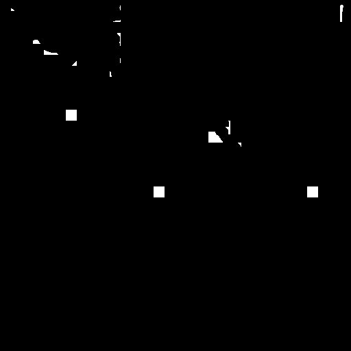 |
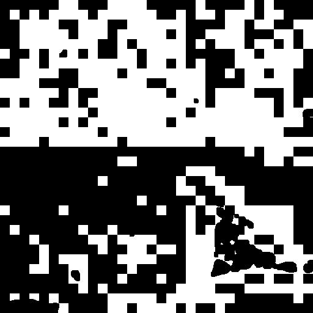 |
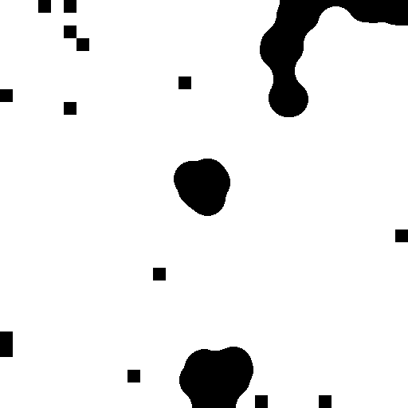 |
|---|---|---|
| Focused Image | Partially Blurred Image | Blurred Image |
Please note that blocks of the per-pixel mask may be 1 not only for globally blurred regions, but also for locally defocused or sparse areas (e.g. tissue gaps or empty regions). This means a value of 1 does not always imply a complete blur.
Detecting Folded Areas
In this example, we will work with the following images:
The investigated tile.
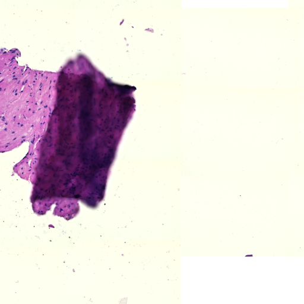
The local area of the tile.
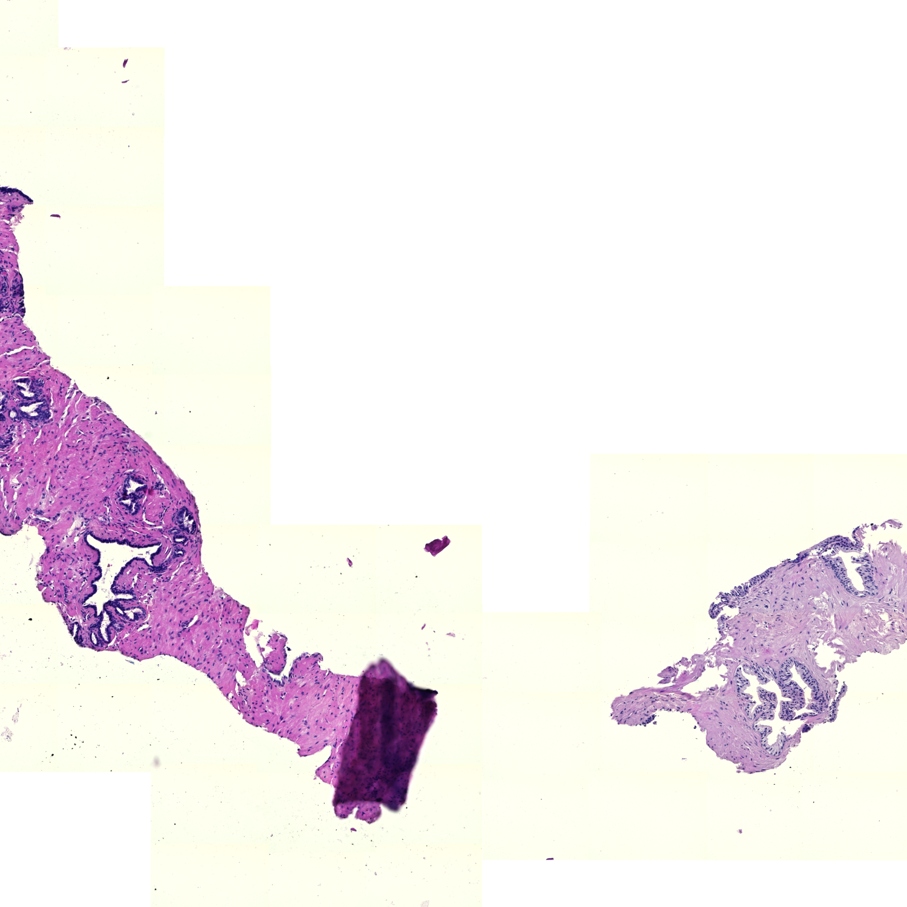
The local area is an optional image. It increases the detection rate of particularly large folds. A suggested size is (3 * width, 3 * height) of the investigated image.
Sample Code
First, we need to import the necessary functionality and load the images into numpy arrays:
1 2 3 4 5 6 7 8 9 10 11 12 | |
Now we can calculate the tissue masks:
14 15 16 17 18 | |
Now we have all the arguments prepared. The folding function can be called:
20 21 22 23 24 25 26 27 | |
Results
To recover the results, one needs to access the artifacts dictionary.
29 | |
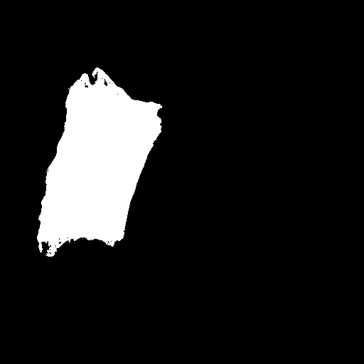